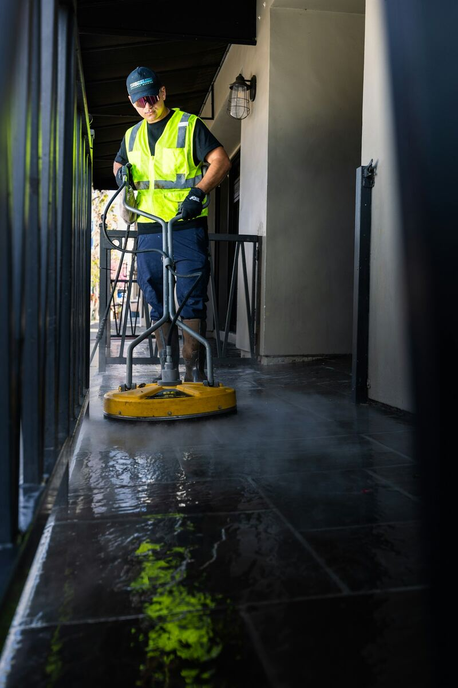
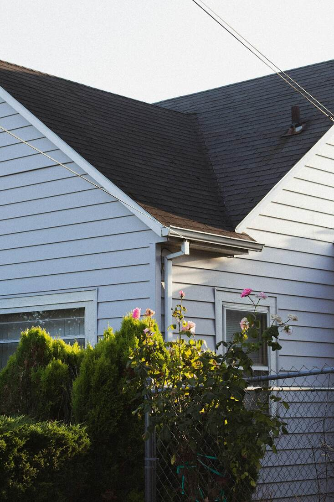
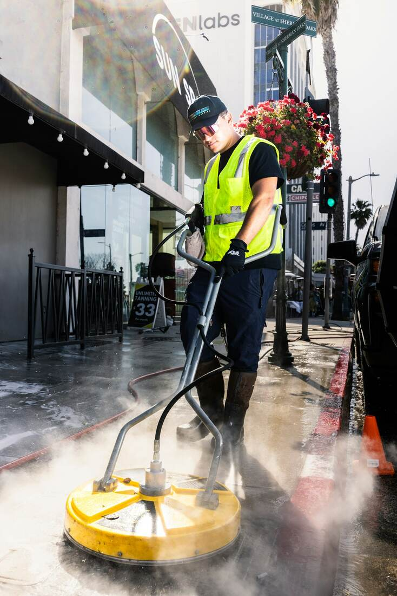
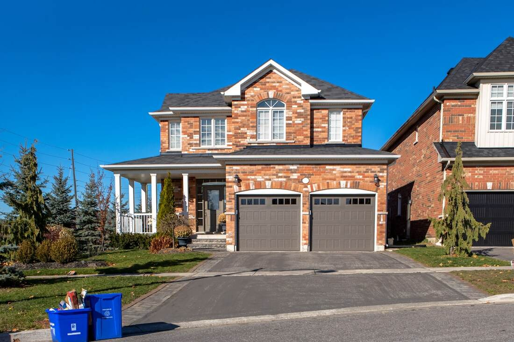

House Washing (Soft Wash)
Your siding takes the brunt of Georgia's humidity, and that means mold, mildew, and algae build up faster than most homeowners expect — especially on shaded or north-facing walls. We use a low-pressure soft wash with a cleaning solution instead of blasting siding at full pressure, which protects paint, caulking, and trim from damage.
Ignored long enough, that buildup eats into vinyl and wood siding and can stain permanently. If it's been over a year since your last wash, or you're seeing dark streaks near the roofline, it's time. Read more about our house washing process, or call us today.

Driveway & Concrete Cleaning
Red clay runoff, tire marks, and oil stains build up on driveways and walkways faster in this area than in drier climates. We pressure wash concrete at full strength (1,300–3,100 PSI), which lifts most staining that a garden hose or scrub brush can't touch.
A stained driveway is one of the first things people notice pulling into your property, and left untreated, embedded stains only get harder to remove. See how our driveway cleaning process works, or call us today.

Roof Soft Washing
Those dark streaks on your roof aren't dirt — they're a bacteria called Gloeocapsa magma, and it spreads across shingles over time if left alone. We soft wash roofs at 150–300 PSI with a cleaning solution that kills the growth without stripping the protective granules off your shingles, which is the method most manufacturers require to keep your roofing warranty valid.
Full-pressure washing a roof is one of the fastest ways to shorten its lifespan, so we never do it. Learn more about roof soft washing, or call us today.

Deck & Patio Cleaning
Wood decks and composite patios collect the same mold and algae as siding, but they also take direct foot traffic and furniture weight, which grinds dirt into the grain. We adjust pressure based on material — composite decking can handle more force than natural wood, which needs a gentler touch to avoid splintering the surface.
A clean deck also makes it easier to spot early rot or loose boards before they become a bigger repair. Call us today for deck and patio cleaning in Sandy Springs.

Gutter Cleaning
Clogged gutters are a bigger deal in this area than people realize — heavy spring pollen and fall leaf drop combine to pack gutters solid within a season, and standing water in a clogged gutter is exactly what mosquitoes and wood rot both need. We clear debris and flush the downspouts so water actually moves the way it's supposed to.
Backed-up gutters can send water straight down your siding and foundation instead of away from the house. Call us today for gutter cleaning in Sandy Springs.
